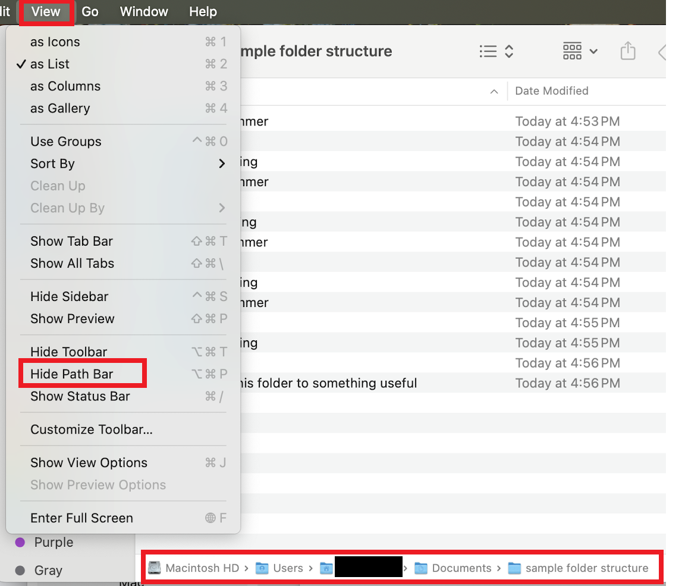

3 Environment Setup
This section overviews some useful modifications to your general computing environment. It is designed for a Mac or PC computer, not a tablet or phone.
All sections of this tutorial, including this one, are designed to be completed independently. Since portions of the skills in this section are required for the other sections, pieces of these skills will also be shown in subsequent sections. You can simply skip over those skill explanations in subsequent sections if you start here.
There are two major and one minor benefit to starting here.
- (Major) Your work on this tutorial will be coherently packaged and saved.
- (Major) This section guides you to download and work with a local or cloud copy of this tutorial. Therefore, you will be able to work with the tutorial directly in Google Docs or Microsoft Word instead of copying and pasting practice sections of the webbook adhoc.
- (Minor) You can track your progress by putting an xx or other mark in the section header of sections you feel comfortable with, jump between sections, and save your work.
Practice these skills while reading the tutorial, during everyday computing work, and in the practice tasks at the end of this section.
3.1 Theory
The default settings on many programs focus on the most common use cases, not more advanced uses. All of these settings can be quickly modified. For example, you can:
- show the path for your files by default,
- make a Mac’s mouse/trackpad secondary-click button easier to access, and
- show the navigation pane for Word and Google Documents by default.
All of these settings can be quickly modified.
Window management
It is often helpful to arrange your application windows so that two or more are readily visible on the same screen. This lets you see the origin of your information at the same time as you see the new location for your information. When information is visible at both its origin and destination, you can copy-paste and drag-drop that information more efficiently than also having to recall and re-order windows. This can help:
- manage files and folders,
- copy and paste information from a browser into a Google Doc/Word document,
- simultaneously view tutorials and apply the skills in real time,
- and much more.
This may take some practice to apply quickly and effectively.
Note that some computer users take this to an extra level. They use two or more computer screens to enhance the amount of information displayed and available for organizing. For example, I currently have the Word version of this document open, along with the Computer Skills Assessment, a set of notes from a workshop on computer skills, and an application to edit the screen grabs included in this document. These documents are organized across two screens for easy access to information.
More specialized computer programs will arrange your windows for you. For example, I edited much of this tutorial in RStudio, a statistical programming language that also creates webbooks. You can see that RStudio organizes my information so that I can see the text of the document, a navigation pane, and my file structure.
Path bars
A path bar is a navigational tool in file management applications that shows your location in a file system by displaying your current visible folder and the folders it is nested within.
The path bar has many uses. You can:
- see where your files are located at all times,
- copy the location of your files in text form, and
- navigate up your folder tree by clicking on higher level folders in the path bar.
On a Mac in the Finder application, the path bar is hidden by default. You can change this default by opening Finder and clicking View -> Show Path Bar in the Finder menu options. The path will appear at the bottom of the Finder application window. Navigate your folder structure by clicking on folders in the path bar. Copy the path address by right (secondary click) clicking on the path and selecting “Copy path.”
On a PC, the path bar is always visible in the upper portion of the File Explorer application. Navigate your folder structure by clicking on folders in the path bar. Copy the path address by clicking into the blank white space next to the path bar and pressing Ctrl+c.


Additional information on organizing your files can be found in “File Management” > “File Structure”.
Mouse/trackpad settings
- Search for your mouse/trackpad settings by searching for “Mouse Settings” in your spotlight search on a Mac (press Command + space bar) and the search bar (bottom left) on File Explorer and see if you want to adjust any settings.
- On a Mac, mice/trackpads may not have easy access to a right (secondary) click. You can access the secondary click menu by pressing Ctrl+click at any time, but this is inefficient. For a more accessible right click, adjust your mouse settings or install a third-party app such as BetterTouchTool.
3.2 Practice
Tasks:
- Download the Microsoft Word version of these tutorials.
- Save the tutorial to a logical place on your computer or a cloud environment such as Google Docs. Logical in this context means a place that you could reasonably and quickly locate if you forgot the actual location of the document. The section on “File Structure” under “File Management” may be helpful.
- Open a File Explorer (PC) or Finder (Mac) window that shows “Computer Skills Tutorials.docx”.
- Duplicate this file by copying and pasting it, ideally with your keyboard.
- Rename your copied file to include the date at the end. For example, it could be “Computer Skills Tutorials 2025-06-17.docx”.
- Open the document, either in Google Docs or Microsoft Word. If you are comfortable with a specialized text editor (not Apple’s Pages), feel free to use that instead.
- Ensure that the navigation pane is open and visible on the left side of the screen.
- The document you saved starts with this section. Start working through the next sections!